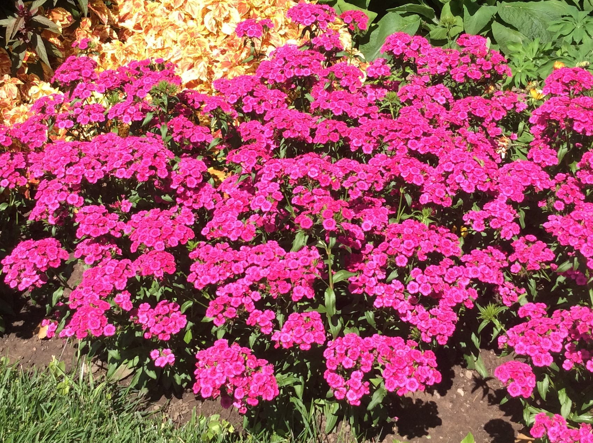

DIANTHUS
Dianthus are grown as annuals and perennials depending on the type. I am focusing on the annual varieties here.

- If you have your Dianthus plants planted in the ground, in a more protected area, it may come back next year.
- In the fall, do not pull your well established plants up. Leave them where they are and keep them watered.
- If fallen leaves nestle in around the plants, let them be as they will provide shelter for the plants over the winter.
- If no leaves have fallen around the plants, either put some leaves or grass clippings around the plants.
- In the spring, when it start warming up, you will need to gently remove the leaves or grass clippings so they can get light to grow.
- Whether this works or not will depend on its environment. I have some more sheltered areas (trees around), of the yard, where they keep coming back. I have tried them in more open areas and they did not come back.
- You are not out anything, by leaving the plants, to see if they will grow again in the spring.
Go to Home Page